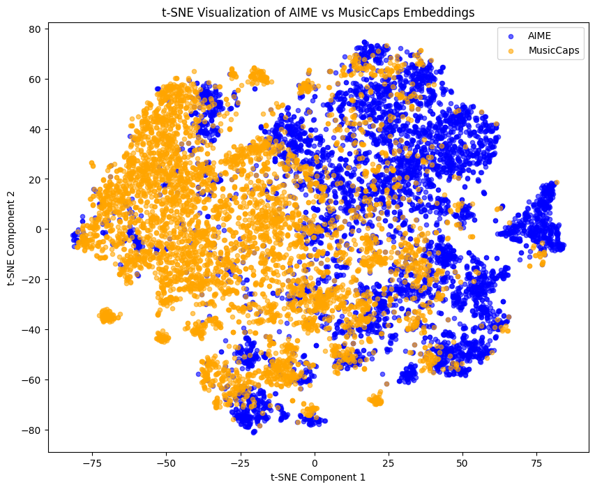
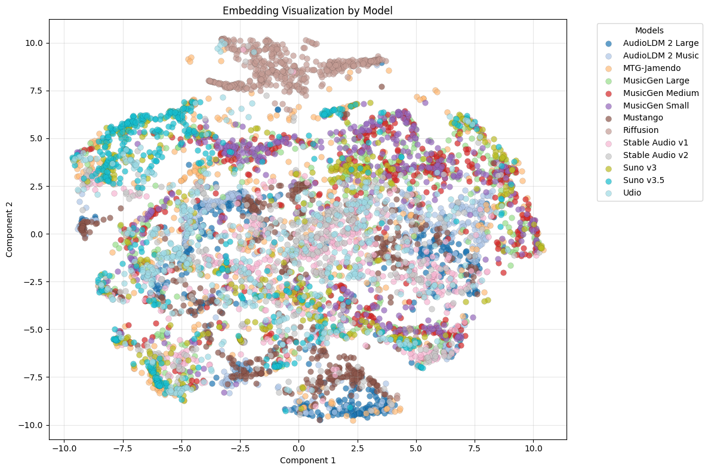
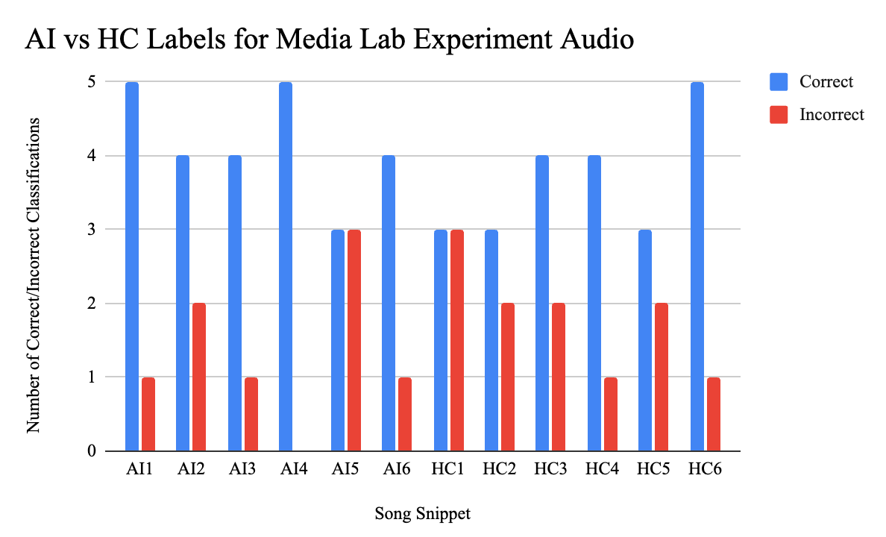
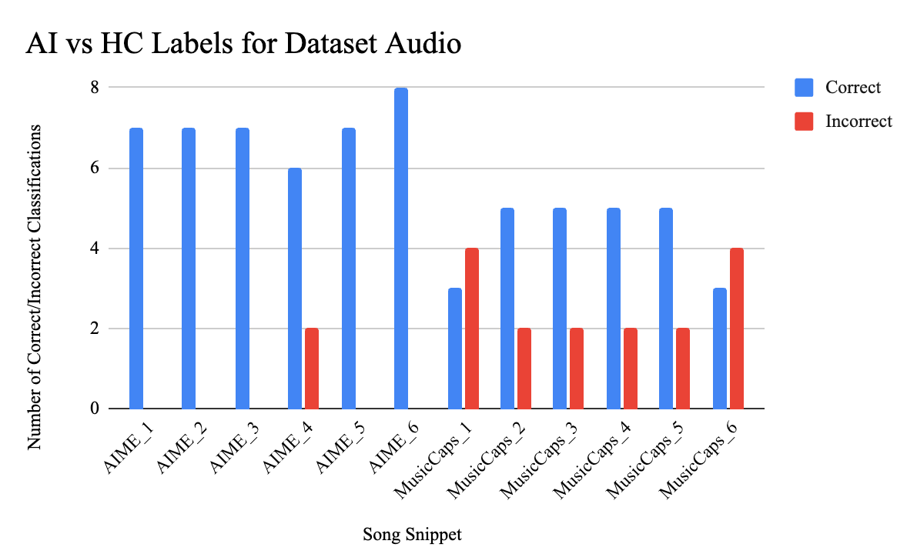

Introduction
This project investigates the ability to predict whether a piece of music is AI-generated or human-composed Our analysis aims to identify key features that differentiate these compositions and explore how AI can impact the sound of music.
Musical Examples
Below are some examples of AI-generated and human-composed music from the datasets we are using that illustrate the problem we are solving:
AIME: AI-Generated Samples
Music Caps: Human-Composed Samples
Technical Methods and Results
Figure 1: t-SNE Visualization of CLAP Embeddings
The t-SNE visualization reveals distinct clustering between AIME (blue) and MusicCaps (orange) embeddings, indicating that the audio representations from AI-generated and human-composed music occupy separable regions in the embedding space. While there is some overlap, particularly in regions with denser points, the differentiation suggests that the embeddings capture meaningful features that distinguish AI-generated music from human-composed music. This separability aligns with the classification results and highlights the effectiveness of the CLAP embeddings in capturing distinct compositional traits between the two datasets.
Figure 2: t-SNE Visualization of CLAP Embeddings for AIME by Generative Model
The embedding visualization shows distinct clusters for models like Riffusion and Mustango, while significant overlap exists among versions of the same base model (e.g., MusicGen Small, Medium, Large). This overlap aligns with misclassifications in the confusion matrix and suggests similarities in embedding patterns due to shared architectures. The clustering raises questions about variations in output quality across models and their impact on classification tasks, including AI vs. human differentiation.
Results from the Class Survey
Figure 3: Media Lab Study Audio
Figure 4: Dataset Audio
Our preliminary analysis of the class survey reveals the following insights:
- AI-generated music tends to have more repetitive patterns.
- Human-composed music demonstrates greater adherence to themes and more emotion.
- Listeners rated AI-generated music as "very generic."
Our findings show that there is a struggle to distinguish between the pieces and we will further investigate the results as well as potentially run another larger scale study to learn more.
Results from the Larger Study
Figure 5: Large-scale Prolific Listening Study Results
The results above are the participant correct and incorrect classifications of the 12 seven-second-snippets of AIME and MusicCaps audio. Error bars indicate a standard deviation of 0.5025
Our analysis of the study reveals the following insights:
- There were significant differences in the distribution of cor-rect and incorrect responses (χ2 = 26.667, df = 11, p = 0.00515)
- Post-hoc analysis using standardized residuals was performed to identify significant deviations from expected counts
- To account for multiple comparisons, p-values were adjusted using the Bonferroni correction. After adjustment, there was no significant difference among the classification responses.